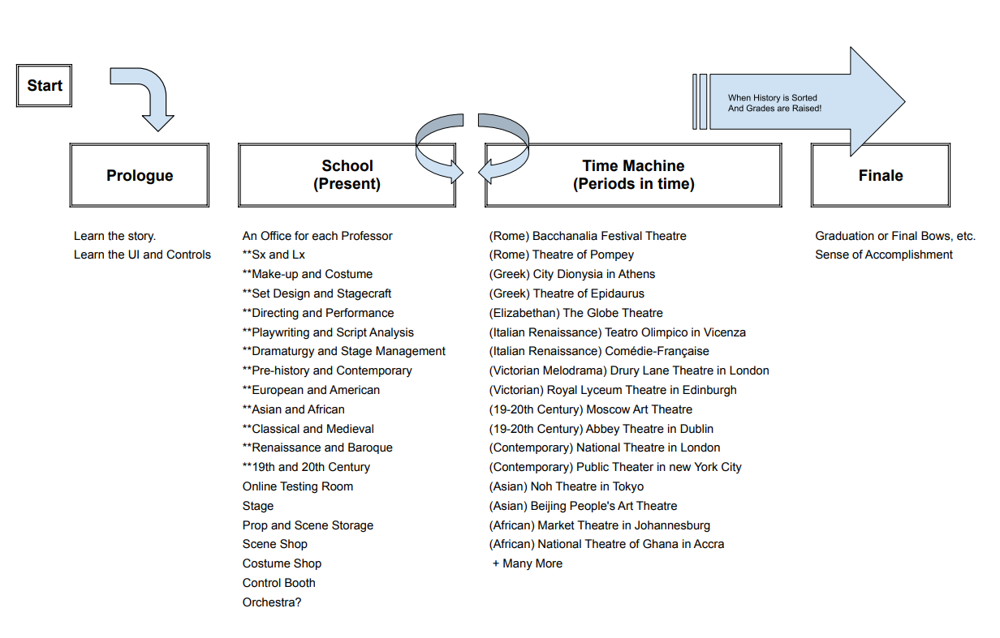

Project Guidemap: Time-Travel Theatre
Concept and Goals
-
- Game Title: "Time-Travel Theatre: A Quest for Knowledge"
- Objective: Improve grades by fixing historical theatre productions.
- Educational Goals: Learn about theatre eras, styles, and techniques.
Game Mechanics
Core Gameplay Loop
- Time Travel to different eras.
- Investigate theatre productions.
- Research with professors.
- Correct historical issues.
- Take quizzes and tests.
Game Structure
Chapters/Levels
- Ancient Greek Theatre
- Ancient Asian Theatre
- Elizabethan Theatre
- Italian Renaissance
- French Neoclassical
- Victorian Melodrama
- Early 20th Century Theatre
- Contemporary Theatre (A "Practical" Final Exam)
- And several others that branch into other non-European/American cultures through history.
Scenes
- Intro Scene
- Time Travel Scene
- Era Investigation Scenes
- Research Scenes
- Correction Scene
- Quiz/Test Scene
Characters
- Player Character: Undergraduate theatre student.
- Professors
- Sound and Lighting Professor: Teaches the history and techniques of sound design and lighting through various eras.
- Make-up and Costume Professor: Focuses on historical and contemporary make-up and costume design.
- Set Design and Stagecraft Professor: Covers the evolution of set design and stagecraft from ancient to modern times.
- Directing and Performance Professor: Teaches directing styles and performance techniques across different periods.
- Playwriting and Script Analysis Professor: Explores the development of playwriting and script analysis through history.
- Pre-history and Contemporary Professor: Specializes in theatre from its earliest forms to modern experimental and digital theatre.
- European and American Theatre Professor: Focuses on the history and development of theatre in Europe and America, including major movements and influential playwrights.
- Asian and African Theatre Professor: Teaches the rich traditions and modern practices of theatre in Asia and Africa.
- Classical and Medieval Theatre Professor: Covers ancient Greek, Roman, and Medieval European theatre.
- Renaissance and Baroque Theatre Professor: Focuses on theatre from the Renaissance to the Baroque period, including Commedia dell'arte and Shakespearean drama.
- 19th and 20th Century Theatre Professor: Explores major movements such as Romanticism, Realism, Naturalism, and early 20th-century avant-garde theatre.
- Historical Characters: Playwrights, actors, stage managers, etc.
Gameplay Elements
-
- Inventory System: Collect books, notes, and artifacts.
- Dialogue System: Interact with characters for information.
- Puzzle System: Solve stagecraft and production puzzles.
- Quiz/Test System: Take quizzes and tests to assess knowledge.
User Interface
-
- Main Menu: Start new game, load game, view achievements, settings.
- HUD: Show current era, inventory, objectives.
- Dialogue Boxes: For character interactions.
- Quiz/Test Interface: For quizzes and tests.
Technical Aspects
- Platform: Web-based using HTML5, CSS, and JavaScript.
- Frameworks/Libraries
- Work on building my own libraries to serve the content with HTML, CSS, Javascript, and PHP if needed.
Story Outline
- Introduction: Struggling student gets a time machine.
- Chapter Examples:
- Ancient Greek Theatre
- **City Dionysia in Athens: A major festival in honor of Dionysus, featuring dramatic competitions.
- **Theatre of Epidaurus: Renowned for its exceptional acoustics and well-preserved structure, used for performances of Greek tragedies and comedies.
- Roman Theatre
- A festival dedicated to Bacchus, the Roman god of wine, theatre, and revelry.
- Theatre of Pompey: One of the first permanent theatre buildings in Rome, known for its grand structure and historical significance.
- Conclusion: Become a theatre expert and pass courses.
- Development Timeline
- Ha, like I would like to either of us like that.
-

- Future Expansion
-
- Additional chapters for more historical periods.
- More complex puzzles and interactions.
- Multiplayer or cooperative modes for collaborative learning.